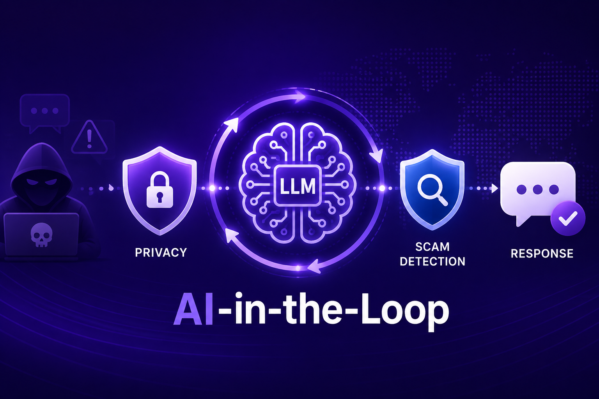
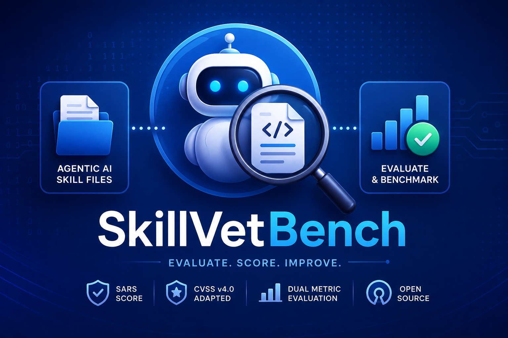

PhD Candidate · Computer Science · UTEP
Ismail
Hossain
Building reliable, efficient, and trustworthy AI — from large language models to federated systems.
I am a PhD candidate in Computer Science at the University of Texas at El Paso, specializing in Large Language Models (LLMs), multimodal learning, efficient deep-learning architectures, and scalable model-training pipelines. My research spans transformer optimization, robustness, alignment, self-supervised learning, active learning, and real-world AI deployment, with publications across CIKM, PoPETs, AAAI (ICWSM), HyperText, and ASONAM.
As a Research Assistant in the SUPREME Lab, I build and evaluate LLMs, develop distributed training workflows (FSDP), design multimodal architectures, and explore PEFT/LoRA, RAG, generative modeling, and behavior modeling. My work focuses on creating reliable, efficient, and trustworthy AI systems.
Trustworthy AI
Privacy-preserving and robust AI systems with formal guarantees for safe deployment.
LLMs & NLP
Efficient language models through optimization, fine-tuning, and alignment techniques.
Federated Learning
Scalable distributed learning with differential privacy for sensitive-data protection.
Healthcare AI
Medical-imaging analysis and predictive analytics for clinical applications.
Social Networks
Advanced NLP for sentiment analysis and online-community safety.
Cybersecurity
AI-driven threat detection for critical-infrastructure protection.


SARS is a 0–10 composite over instruction-fidelity risk, data gravity, action irreversibility, blast radius, and chain amplification. Detects 12+ vulnerability categories with structured remediation reports across Anthropic/OpenAI/HuggingFace/Ollama backends, ClawHub registry integration, and a live leaderboard on Hugging Face Spaces.
Loading data…
Healthcare AI & Medical Imaging
−Federated Learning & Privacy-Preserving ML
+Social Media, NLP & Generative AI
+Cybersecurity & Quantum AI for Nuclear Systems
+View full deadline dashboard ↗
| Conference | Cycle | Submission Deadline | Location |
|---|